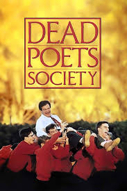
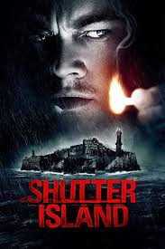
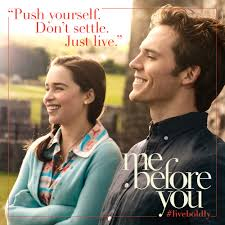
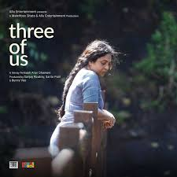

Movie Review
DEAD POETS SOCIETY
"Dead Poets Society" is a profoundly moving film that explores the impact of an unconventional English teacher, Mr. Keating, on his students at a conservative prep school. Robin Williams delivers an inspiring performance, encouraging his students to "seize the day" and appreciate the power of poetry. The film beautifully captures themes of individuality, the struggle against conformity, and the pursuit of passion. Its poignant storytelling and emotional depth leave a lasting impression on viewers. Overall, it's a timeless and thought-provoking masterpiece that celebrates the transformative power of education and self-expression.

SHUTTER ISLAND
"Shutter Island" is a masterful psychological thriller directed by Martin Scorsese and starring Leonardo DiCaprio. The film follows U.S. Marshal Teddy Daniels as he investigates the disappearance of a patient from a hospital for the criminally insane. With its gripping narrative, stunning cinematography, and a hauntingly beautiful score, the movie keeps viewers on the edge of their seats. DiCaprio delivers a powerful performance, capturing the complexities of his character's troubled psyche. The film's twists and turns culminate in an unforgettable and thought-provoking climax.

ME BEFORE YOU
"Me Before You" is a poignant romantic drama that tells the story of Louisa Clark, a quirky and optimistic young woman, and Will Traynor, a wealthy and cynical quadriplegic. The film beautifully explores themes of love, loss, and the value of life, with standout performances by Emilia Clarke and Sam Claflin. Their chemistry is heartfelt and engaging, drawing viewers into their emotional journey. While the narrative has moments of predictability, it is the genuine portrayal of the characters' growth and the moral dilemmas they face that make the film compelling. Overall, "Me Before You" is a touching and thought-provoking story that resonates deeply with its audience.

THREE OF US
"Three of Us" is a captivating drama that delves deep into the complexities of relationships and identity. With stellar performances and a thought-provoking narrative, the film navigates themes of love, loss, and self-discovery with nuance. Its poignant storytelling and well-crafted characters leave a lasting impression, offering a heartfelt exploration of human connections and the choices that define us. "Three of Us" is a must-watch for those seeking a compelling and emotionally resonant cinematic experience.